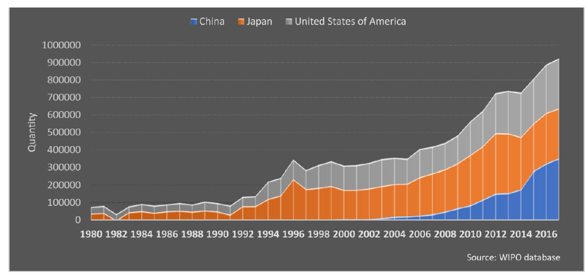
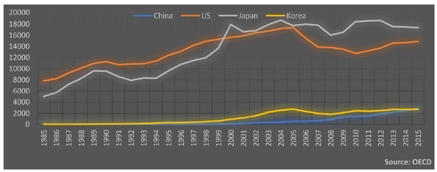
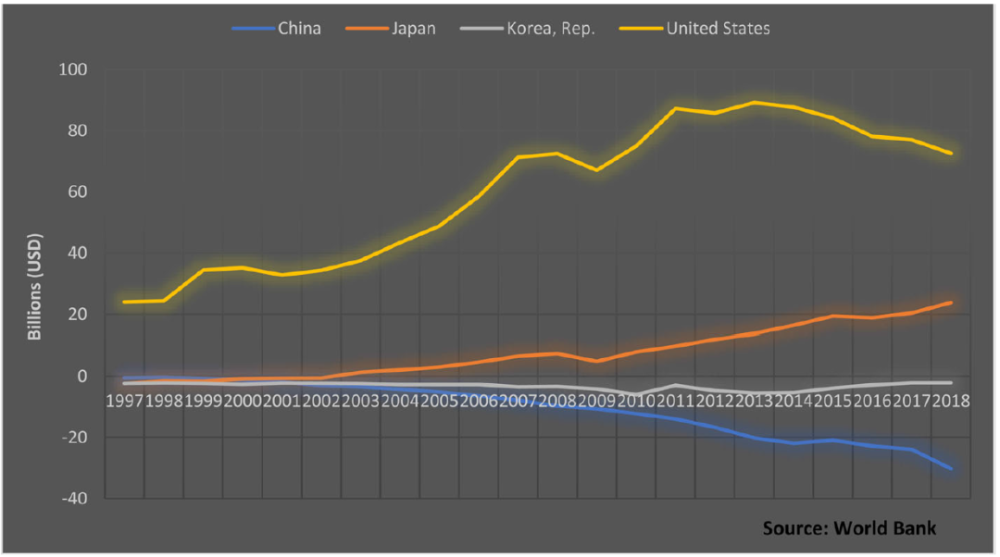
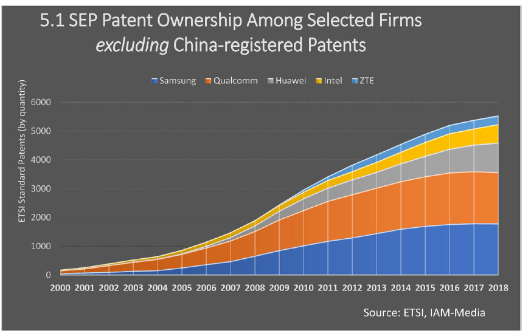

收录于合集
#中美关系 13 个
#美国研究 24 个

作品简介
【作者】 Anton Malkin, 香港中文大学（深圳）人文社科学院助理教授，研究兴趣为跨国公司与中国国内政治经济，新兴经济体与全球金融治理，美国与其贸易伙伴之间的权力关系。
【编译】 梁坤（国政学人编译员，华威大学国际政治经济学硕士）
【校对】 丁伟航，宋翔宇
【审校】 晋玉
【排版】 黄婷婷
【美编 】黄竹音
【来源】 Anton Malkin. (2019). “The made in China challenge to US structural power: industrial policy, intellectual property and multinational corporations”. Review of International Political Economy , 26(4), 1-33.
期刊简介
Review of International Political Economy, 《国际政治经济学评论》，创立于1994年，是一本以国际政治经济学为主要内容的同行学术评审杂志。2019-2020年的影响因子为3.610。
中国制造对美国结构性权力的挑战：
产业政策，知识产权和跨国公司
The made in China challenge to US structural power:
industrial policy, intellectual property and multinational corporations
Anton Malkin
推荐语
本文聚焦《中国制造2025》及近年来中国在无形经济，知识产权经济等方面取得的进展。作者将政府与跨国企业在全球经济中所扮演的角色联系起来，细致地分析了中国跨国企业在全球经济中的竞争潜力，并认为中国有潜力去挑战美国的结构性权力。
内容提要
这篇文章探讨了美国在全球经济中的权力问题，它认为与美国的 结构性权力 相比，中国的结构性权力的潜力在近来的国际政治经济学文献中 被低估了 。它审视了中美贸易和技术冲突，并描绘了中国在全球经济中的 自主权和影响力 。同时，作者以 无形资产 在全球价值链中日益增长的重要性为基础，关注 生产性权力 的概念，扩展了苏珊·斯特兰奇对生产性权力的定义。文章首先从两国之间的相对实力竞争的角度来描述中美科技和贸易对抗。通过对有关中国的知识产权保护，商业化、全球价值链提升、标准制定和竞争政策等方面的数据和文献进行分析，文章指出中国在上述各方面的实力 都在增长 。作者得出结论，认为中国具有潜在生产性权力， 《中国制造2025》 和相关产业政策规划旨在实现中国的结构性权力。
文章导读
01
导论
本文概述并解释了《中国制造2025》在当今中美贸易和技术冲突中的重要性和相关性。研究显示，中美之间的矛盾已超越中国的贸易实践、中美经常账户失衡或所谓的知识产权盗窃等因素所引发的矛盾。本文认为，《中国制造2025》的重点在于 生产性权力 ，这是美国在全球经济中结构性权力的一个核心方面，中国在这方面对美国构成了潜在的挑战。但这 并不意味着美国霸权的衰落 ，美国在全球价值链(Global Value Chains)中仍然占据主导地位。
借鉴苏珊·斯特兰奇对生产性权力的定义，本文将生产性权力理论化并将其分为四个方面： 1.市场权力；2.全球价值链中的中心地位；3.资产的所有权；4.技术标准的制定 。本文表明，中国积极参与全球价值链和全球无形经济，这让中国 有潜力 去提升自身在全球经济中的自主权和影响力，并在上述四方面不同程度地挑战美国的结构性权力。
02
文献回顾
本文认为，尽管中国在全球无形经济中会对美国的霸权 产生挑战 ，但美国全球经济霸权在可预见的未来 将继续持续下去 。斯塔尔斯（Starrs）认为美国跨国公司在全球价值链中持续占据主导地位，施瓦茨（Schwartz）指出美国的相对优势在于市场力量的集中，并且在 全球知识产权资产市场 的也有优势。在全球货币体系中，斯托克斯（Stokes）认为2008年全球金融危机加强了 而不是削弱 了美元的货币力量，而孔诰烽（Ho-Fung Hung） 指出全球金融危机揭示了中国在全球货币体系中的 结构性弱点 。
本文认为，《中国制造2025》体现了中国正在积极开发自身的潜力，以试图拥有结构性权力。它强调中美冲突在很大程度上是由于全球经济权力结构的不平等造成的。这些不平等不仅是美国经济在全球贸易和金融领域的中心地位和强大军事实力的产物，也是美国所主导的知识产权治理理念的产物。而美国在知识产权方面的主导地位源自 美国商业集团 在全球知识产权制度结构和市场结构中的影响力。
作者提醒到，国家之间的 结构性不平等 很明显地存在于全球体系中，而且自由国际秩序的经济方面是由美国及其跨国公司享有特权的等级制度所支撑的，这挑战了自由主义者的认知。此外，本文证明，中国的决策者能够通过各种政策方法，包括自主创新和 知识产权商业化政策 、参与 全球标准制定 ，参与 监管 和 司法制度的制定 ，来帮助中国跨国公司与来自美国和其他国家的对手竞争，这体现了国家机构在全球价值链中的重要性。
03
定义美国结构性权力和来自中国的挑战
苏珊·斯特兰奇认为美国结构性权力的定义有 四种来源 ：（1）为自己和国际事务中的其他行为体提供安全保障的能力；（2）在商品和服务生产中的主导地位；（3）全球经济中的金融和信贷结构；（4）知识和思想的生产。本文借鉴了其中的第二类来源，这是为了表明中国并不是在从根本上挑战美国的全球霸权，而是在 着手塑造全球秩序的结构轮廓 ，以为日后获得结构性权力做准备 。目前，中国在全球价值链中的自主性有所提高，但中国在全球价值链中的影响力 仍然落后于其潜力 。因此，尽管中国尚未对美国结构性权力构成重大挑战，但中国有潜力去实现它。
04
无处不在的自主权：奋起直追的工业与国家安全目标的融合
《中国制造2025》强调，中国企业需要从中低端装配商发展成为品牌、专利和商业秘密等资产的拥有者，这些资产代表了技术资产价值创造的最高水平。为了提高中国工业在一系列信息和高科技领域提供技术核心组件的能力，中国政府同时制定了其他的政策工具，在研发和商业化网络框架下促进政校企联动。这些网络实际上将利用中国国内的技术产品市场，使它们更好地与中国国防工业的需求保持一致。作者认为，该计划真正的 变革潜力 在于承认并 强调发展无形经济 。这将对美国的生产性权力产生潜在的挑战。因为 中国可以利用全球知识产权体系（通过遵守规则或颠覆规则）来帮助其跨国公司挑战美国同行，从而在全球知识产权收入中获取收益 。
05
全球无形经济中的自主权和影响力
无形价值来自于企业从 知识产权 中获得的商业资产，以及其他非传统的和非实物的资产，如数据和技术标准。无形资产与金融或者实物资本的所有权无关，而是和这些 思想的所有权 有关。无形资产的积累为权力的自主性和权力的影响力创造了条件。以无形经济为基础的竞争不仅需要 金融资本 和 一个组织良好的国家 ，更重要的是跨国公司 要能够产生 可以商业化为数据、商业秘密、专利、品牌等的 想法和研究 。
中国要想取得 自主性 ，中国公司需要克服至少以下三个方面的问题。首先，中国的跨国公司必须能够通过 利用市场力量 和 知识产权 来创造新的技术资产。第二，跨国公司必须能够在 国内和全球范围内 捍卫和维护其知识产权。他们所在国的知识产权制度必须不仅能够保护国内行为体的知识产权，而且能够保护全球行为体的知识产权。最后，希望登上全球价值链顶端的跨国公司必须 有能力 使它们的技术资产 成为全球标准 ，这样它们的竞争对手别无选择，只能依靠它们来开发、生产和销售技术。
06
中国的权力困境：自主权和对世界领先的跨国公司的需求
支撑中国高科技制造业的大部分技术是由 非中国企业拥有的 。《中国制造2025》旨在帮助中国企业在全球技术竞争中更具竞争力。
**
**
6.1 全球价值链的中央性和市场权力的联系
中国一直寻求在全球生产体系中拥有适度的自主权。 中国的自主性 可以用生产性权力的两个组成部分来解释：全球价值链的中心性和市场性权力。
在过去十年中，尽管中国国内工资和零部件价格急剧上升，但出口一直在增长。这表明，中国零部件生产商的 定价能力显著增强 ，相关战略和政策，确实提高了中国在关键行业的附加值份额。中国市场规模的影响也使中国的权力得到增强。庞大半导体设备市场让中国在全球经济中拥有较强的影响力，在 先进国防工业制成品 贸易中，中美形成一种 相互确保摧毁（Mutually Assured Destruction） 的局面。在全球金融危机爆发后的十年里，中国已逐渐从世界工厂转变为工业和零售业的消费国世界。中国拥有利用其国内需求的绝对规模来实现其目标的能力，这就是 中国的市场权力 。
由于中美市场之间的联系，美国决策者对于中国企业所采取的措施对中美两国的企业 都产生了显著影响 。尽管美国市场的域外影响可能会限制中国跨国公司在中国本土以外的市场准入，但也可能会使美国跨国公司在中国市场的市场准入和技术主导地位受到严重影响。同时，鉴于中国市场的规模和重要性，切断中国公司与美国供应商的联系，可能会对美国供应商本身造成伤害。
07
再定义影响力：中国和无形经济
作者认为，中国在知识产权资产的 收购 和 利用 方面的进展以及中国无形资产 积累 和 商业化的激增 预示着中国有潜力在 生产性权力 方面挑战美国的生产性权力。
中国寻求建立一个促进中国跨国公司商业利益的知识产权制度。作者认为中国政府对市场权力的行使与对科研商业化的渴望促使中国知识产权保护水平不断提高。过去十年，与其他技术先进的制造业国家相比，中国原产实体的 专利授权总量大幅上升 （图1）。此外，中国在经合组织美日欧三方专利集团中的 注册量也大幅上升 （图2）。

图1 中美日专利授权总数

图2 四国在经合组织美日欧三方专利集团（这些专利被日本，美国和欧盟所保护）中注册的专利数量
**
**
7.1 知识产权资产收购
中国的公司，尤其是电信公司，信息通信技术公司等一直在积极 研发和购买专利 。这帮助中国公司 克服 来自欧美当局对中国企业施加的 限制 ，使得中国企业也能在全球市场上 获取无形价值 。与此同时，中国正在慢慢形成自己的知识产权规范，并通过贸易和投资协议及其他举措逐步出口这些规范。最近，中国企业开始减少对进口技术的依赖，转而发展国内创新能力和促使知识产权商业化。政府将资金引导到专注于机器人、人工智能和可再生能源等核心技术的中小企业。政策制定者帮助目标行业的中国跨国公司克服监管障碍，进入国内和全球市场，并在海外市场赢得他国政府的采购合同。
与其他经济体的知识产权收支平衡（图3）相比， 中国知识产权支付逆差 居高不下。作者认为，这 不应被视为弱点 ，因为这反映了两个因素：1.中国企业日益融入全球价值链，这需要使用来自全球的知识产权；2.中国越来越坚持强有力的知识产权保护。而且，《中国制造2025》旨在通过参与全球技术标准化和竞争政策的规则制定来有效 扭转知识产权流失现象 ，这两方面都要求中国政府和跨国公司在其中扮演关键角色。显然，中国企业和政策制定者并不打算无限期地成为知识产权净进口国。

图3 知识产权国际收支平衡
08
通过技术统治的影响：标准设定和全球价值链
在现代全球价值链的 顶端 是那些 制定技术标准 的公司，他们制定的标准 规定了产品的制造方式 。实际上，制定全球标准也是一个 资产创造 的过程，它使跨国公司能够影响新的制造方法和模式的出现，并从新技术标准的创造中获得利益。
尽管中国企业在全球企业股权中 所占的份额仍然很可能很低 ，但中国影响 无形价值创造方式 以及 价值如何分配的能力 已经 显著提高 。政府可以利用国内和全球 标准化机构和组织 ，确保中国跨国公司从技术标准化中获得更大份额的租金；政府还可以利 用庞大的国内市场 及其与 全球价值链 和 基础设施 的全球联系，确保中国企业获得有利的竞争成果。这使得中国的跨国公司能够克服美国和其他国家的跨国公司的市场支配地位所带来的不利影响。
8.1 标准设置与垄断租金：中国的进步与目标
中国计划利用关键的国际标准制定机构促进 中国原创技术的全球化 ，并且帮助中国实现军民融合等国家安全目标。为参与全球技术标准制定，中国提出的有效战略包括多项由中央政府推动的标准化举措，而这些举措依赖于省级和市级标准制定机构在技术研发方面的投入。这些努力有助于中国跨国公司在未来通过专利来获取垄断租金。在2012年之前，中国在很大程度上一直是技术标准的接受者。这使得中国的跨国公司难以与外国同行直接竞争。然而，在过去的5年里，中国也以惊人的速度在 技术标准化方面取得进步 。例如，在上一代和当前这代移动通信技术中，中国的电信公司从标准接受者转变为标准制定者。当前在国际电信联盟5G标准制定机构中有39个领导职位，而仅华为公司就占据了其中的8个席位。
美国试图遏制中国在国际标准制定方面的发展势头，但这对美国企业在技术标准化方面的影响力也会产生 负面影响 。例如，美国公司因担心受到国内法律的影响而放弃与华为等在美国“实体名单”上的中国公司一起参与标准制定活动，这将降低美国在这方面的影响力。而且数据显示， 受到制裁的华为和中兴在全球范围内拥有重要的标准必要专利的投资组合，这让美国很难阻止这两个公司通过专利来获利 。

图4 除在中国注册的专利外，所选公司的标准必要专利所有权
**
**
8.2 作为治国方略的标准制定：竞争政策和全球联系
标准制定也是中国的治国方略。标准由专家委员会制定，但决策者在战略上实施和利用这些标准以实现具体目标。国家发改委在2018年成功地阻碍了高通收购荷兰恩智浦NXP半导体公司。鉴于此类大规模收购需要在收购方活跃的 每个主要市场 获得监管部门的批准（以避免垄断性的市场结果），中国实际上能够利用 国内监管机构在境外发挥影响力 。这表明中国已经开始有效地利用 市场力量 ，按照自己的偏好 制定全球竞争规则 。这反映出中国在全球生产力领域挑战美国的潜力。
09
结论
中国对美国的结构性力量构成了 潜在挑战 。中国决定全球生产成果的潜力来自于其在全球价值链中的提升、先进的产业结构、知识产权制度改革和技术标准化政策。中国政府采取的政策增强了中国在全球经济中的自主权和影响力，使中国跨国公司 相对于美国跨国公司 的市场实力得到增强，并使中国在全球经济中对 无形资产 拥有更大的 控制权 。
本文认为，对中国在全球结构性权力方面的潜力开展的研究强化了对国家、跨国公司和全球无形经济之间关系的研究和理解的必要性，对国家和跨国公司的研究也应关注如技术标准化和标准必要专利诉讼等其它 被忽视的领域 。
最后，本文 并不认为 中国即将取代美国在全球经济或更广泛的国际秩序中的主导地位。本文提供的分析旨在强调知识产权和标准制定作为衡量结构性力量的重要手段，以及中国在全球价值链中的提升。其目的是使国际政治经济学学者更多地关注全球无形经济的研究，以及 跨国公司 在塑造全球经济 权力关系 方面的角色和代理作用。
译者评述
本文将政府、跨国公司与全球经济竞争联系了起来。考虑到中国公司被美国政府所制裁的实例频频发生，这一研究的重要性尤为突出。由于生产上的全球分工，现今在高新技术制造业的竞争往往就是跨国企业在 全球价值链中的地位竞争 ，占据主导权的企业能够拥有多种权力。有学者提出，全球价值链之中的权力概念涉及国家，国际组织，社会运动等多种行为体，并存在 四种主要的权力形式 ：议价权力（拥有议价权力的企业往往能够决定价格）；示范性权力（拥有这种权力的企业其生产标准会被其他企业所借鉴）；制度化权力（产业链中的正式商业组织利用这种权力来制定规则）；结构性权力（商业组织中的领导者拥有的潜移默化地影响其他成员的权力）。这些权力往往属于在价值链中 占据主导地位 的企业或者制定全球标准的行业协会。本文作者所提到的《中国制造2025》所涉及到的目标——帮助中国企业在 高新制造业 竞争中占据有利地位正是瞄准了全球价值链中的这些权力。
考克斯在《生产，权力和世界秩序》中提到生产与权力之间的关系。考克斯认为 一个国家在世界经济中的权力与该国的国际化的基础有关 。(Cox,1987:7)政府在政治经济方面的努力（例如签订自由贸易协定等等），生产的国际化以及由生产国际化所动员起来的本国的社会力量对于自身在国际经济环境中所拥有的权力和地位都至关重要。因此，在国际经济竞争中，将政府与跨国企业的角色相联系是很有意义的，这有助于深入理解全球经济秩序的形成过程。
世界市场体系的结构固然存在刚性，但是通过正确的政策组合和努力，这种结构刚性并非不可突破。本文中，作者也强调了中国在挑战美国的结构性权力方面的能力。但是，作者夸大了政府及其政策制定（主要指《中国制造2025》）在全球经济竞争中的作用。华为，中兴等跨国公司的成功因素很复杂，其研发能力也并不主要依靠政府的支持，《中国制造2025》也没有让我国迅速产生一大批具有很强竞争力的跨国公司。作者的这种夸大性解读很容易让人忽略我国公司自身的努力与我国市场经济本身的活力，转而片面强调政府的作用。这对于对外宣传我国的中国特色社会主义市场经济的成果会产生一些负面影响。因此，如何准确地评估《中国制造2025》在我国的生产实践中产生的作用便具有了很强的现实意义。第一，这有助于我们跟踪政策效果，及时调整政策使之更好地服务于我国企业的竞争力的提升；第二，这有助于纠正国际上存在的对我国经济政策的一些误读，以及减少他国对我国的战略误判。
参考文献
[1] 翟东升：《货币，权力与人：全球货币与金融体系的民本主义政治经济学》，北京，中国社会科学出版社2019年版。
[2] Dallas, M. P., Ponte, S., & Sturgeon, T. J., “Power in global value chains”. Review of International Political Economy , Vol.26, No.4, 2019, pp.666-694.
[3] Cox, Robert W., Production, power, and world order: Social forces in the making of history , New York: Columbia University Press, 1987.
[4] Blanchard, Emily J., Chad P. Bown, and Robert C. Johnson. Global supply chains and trade policy , The World Bank, 2016.
文章观点不代表本平台观点，本平台评译分享的文章均出于专业学习之用, 不以任何盈利为目的，内容主要呈现对原文的介绍，原文内容请通过各高校购买的数据库自行下载。
**
**
**
**
**
**
添加 “国小政”微信
获取最新资讯

国政学人
支持学术公益与知识传播
微信扫一扫赞赏作者 __赞赏
已喜欢，对作者说句悄悄话
取消 __
发送给作者
发送
最多40字，当前共字
上一页 1/3 下一页
长按二维码向我转账
支持学术公益与知识传播
受苹果公司新规定影响，微信 iOS 版的赞赏功能被关闭，可通过二维码转账支持公众号。